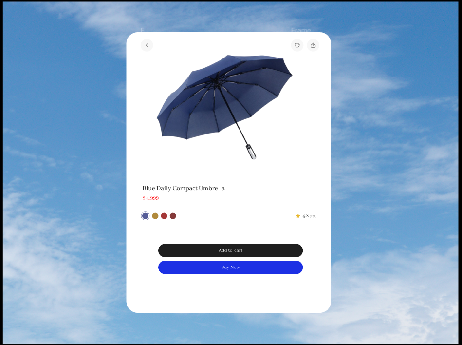
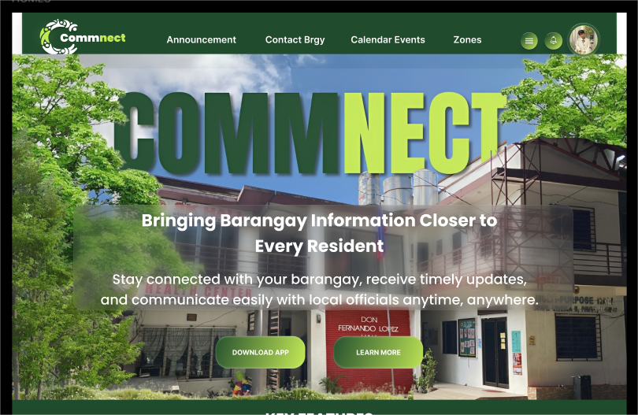

Hello, All!
Angela T. Alfaro
Angela T. Alfaro
Western Institute of Technology
UI Designer

As an Information Technology student, I see myself as someone who is constantly exploring the world of technology and its endless possibilities. My journey in IT is driven by curiosity and a desire to understand how systems, applications, and networks work together to shape the digital age. Each lesson, project, and challenge I encounter helps me develop not only technical skills but also patience, problem-solving abilities, and creativity.
Date of Birth:
September 20, 2005
Address:
Sitio Ranas Brgy. Trapiche, Oton, Iloilo
Contact:
09513263058
Gmail:
angelalfaro475@gmail.com
Elementary: Oton Central Elementary School
High School: Oton National High School
Strand: Humanities and Social Sciences (HUMSS)
College: Western Institute of Technology
Program: Bachelor of Science in Information Technology
 MySQL
MySQL
 HTML
HTML
 CSS
CSS
 JavaScript
JavaScript
Some of my favorite testimonials from my project

Challenge 1

Challenge 2

Periodt App
Aktiv WebApp

Commnect
I am an IT student who comes from the province. Since my school is in the city, I live in a dorm so I can attend my classes more easily. Life in the dorm is very different from home. At home, I am with my family and everything feels familiar, but in the dorm I need to be more independent. I cook simple meals, manage my own time, and learn how to live with other students.
Studying IT is both exciting and challenging. I spend a lot of time learning about computers, coding, and solving problems. Sometimes the lessons are hard, but I enjoy discovering new things and improving my skills. Living in the city also gives me more opportunities to study and grow, even though I miss the quiet life in the province.
Being away from my family is not easy, but it teaches me responsibility and independence. I am learning how to balance my studies, personal life, and adjusting to city life. Even though it can be tiring, I know these experiences will help me in the future, both in my career and in life.
Contact Me